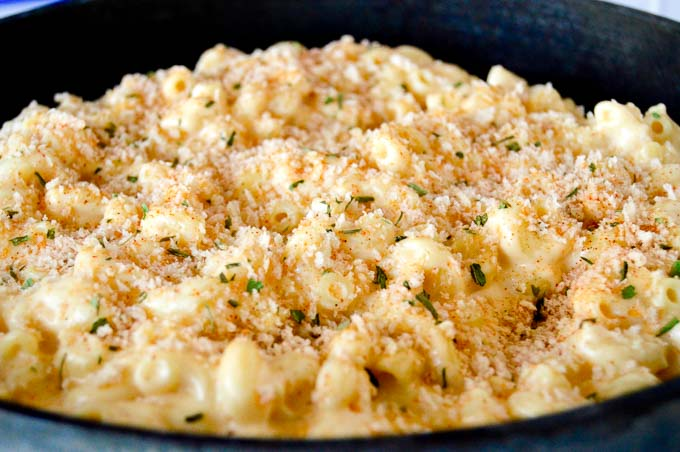

Gouda Mac & Cheese

Homemade gouda mac n cheese recipe is creamy, extra velvety and swirls
perfectly around al dente pasta with extra cheese sauce in each crevice
for pure deliciousness in each forkful.
This homemade pasta dish actually has 2 kinds of gouda and a surprise cheese too!
The creamy, smokiness of the gouda combined with the more “tart” goat cheese will
become a family favorite! (the fact that it takes less than 20 minutes to make is a bonus too!)
Ingredients
- Rigatone Pasta
- Salt
- Unsalted Butter
- All Purpose Flour
- Heavy cream
- Smoked Gouda Cheese
- Goat Cheese
- Gorgonzola Cheese
- Dry Mustard
Steps
- Cook your pasta in a large pot of water with kosher salt until al dente, then drain pasta and set aside.
- Start with melting your unsalted butter in a pan on medium-heat so it doesn’t burn. Ideally you would like the
butter to remain a light color and not brown. (I like a cast-iron skillet or any large sauce that conducts
heat evenly will work.)
- Add all purpose flour and whisk until its completely mixed in. Get all the lumps out.
- Then let the flour cook for 2-3 minutes to bring out the nutty flavor.
- Add whole milk or heavy cream slowly while whisking, Once it thickens add the regular gouda and the smoked gouda
cheese and the goat cheese stirring until the cheese melts.
- Add any spices you want in (I use nutmeg, black pepper – if you want it a little zesty you could add a pinch of
dry mustard. Although my favorite add in is my homemade cajun seasoning mix.